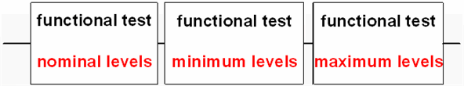

Concept of the Swing Adjustment Solution
This is a simple example to illustrate the concept of the swing adjustment.
In the figure below a functional test is executed with nominal, minimum and maximum level settings. The same timing has been set up for all three functional tests. Now a swing adjustment has to be set up.

Two different approaches to perform swing adjustment are now explained:
- Manual Swing Adjustment
In test systems that do not offer a swing adjustment feature you would have to recalculate the edges of your timing. For swings higher than 3V the edge settings must be shifted slightly to the left, for swings lower than 3V the edge settings must be shifted slightly to the right.
That is, although all three functional tests in our example use the same timing their edge settings will differ after 'manual' swing adjustment. You need three different timing sets. It is obvious that performing any timing measurements on these adjusted timings is quite inconvenient as you always have to take into account the 'swing adjustment shift' of the edges.
- Automatic Swing Adjustment
The V93000 test system offers fully automatic swing adjustment. You simply enable swing adjustment for a waveform set of a specification and the swing is automatically adjusted for all combinations of timing sets and level sets used.
This is done by creating 'shadow' timing sets for the different swing adjustments needed. That is, in our example you always assign the same timing set to the testsuites. Shadow sets are used to compensate for different swings. Shadow sets are normal timing sets from a test system point of view, but they are hidden from a user point of view. Again, three timing sets are stored in the test system hardware.
With automatic swing adjustment enabled you can set up your timing as if you would not have to deal with different swings (see Using Automatic Swing Adjustment).